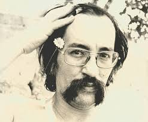

História do Haiku no Brasil
O Haiku teve início no Brasil por volta dos anos de 1906, antes deste ano, o Haiku (que no português se escreve "Haicai") só era lido por vias europeias. . Em 1906 Monteiro Lobato publica um artigo ao qual dá título de “A poesia Japonesa” onde traduz seis haicais. Dois anos depois, em 1908, aporta em Santos (SP), a nau Kasato Maru com seus 781 imigrantes japoneses. É nesse momento que, segundo Matsuda Goga, o primeiro haicai de tendência tradicionalista escrito em território brasileiro é criado por Shûhei Uetsuka:
chegando: vê-se lá no alto
a cascata seca.
Principais Autores Brasileiros
Paulo Leminski
Paulo Leminski, poeta paranaense, que juntando em seus poemas tanto a vertente concretista quanto a vertente zenista e a tradicional, construiu uma obra literária dedicada ao haicai, marcada também pelo uso de rimas, mas que também é, enquanto poesia, cheia de lirismo, com versos que correm soltos sem propor qualquer enredamento, dando assim aos seus poemas uma verdadeira identidade de haicai. É em 1983 com o livro “Caprichos & Relaxos” que o autor conquistou tanto o público quanto a crítica, disseminando ainda mais a arte nipônica e se assentando como um dos poetas mais relevantes de sua geração e como um dos grandes haicaístas brasileiros, publicando ainda no mesmo ano, a biografia do primeiro Haijin: “Matsuo Bashô, a lágrima do peixe”.

Guilherme de Almeida
Um gosto de amora
Comida com sol. A vida
Chamava-se agora.